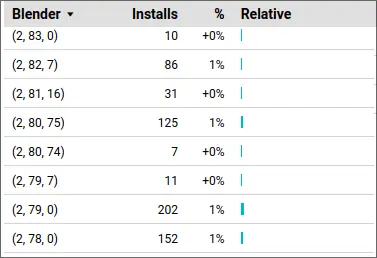

Why Dropping 2.7x Support in MCprep is for the Better
After years of supporting Blender 2.7x in MCprep, we’ve now decided to remove support starting with MCprep 3.5.
Hardcore Blender 2.7x user walks in
“WHAT THE F-CK DID YOU SAY!?!?!? Reverse it, NOW!”
Yeah no, we’re not doing it. It’s too much work to suppor-
“Sounds like something a lazy developer would say”
Shut up, this is for the better, let me explain.
The Massive Pain That is, 2.7x Support #
When we say “2.7x support”, it includes a variety of things:
- Using supported syntax
- Wrapping API methods
- Tricking Python itself (I’ll get back to this)
- Guard statements for versioning
- Testing (MCprep 3.4.2 was tested with 15 different versions of Blender)
It’s not as simple as “snap your fingers and boom, support”, it’s a much larger ordeal. Here’s an example of some code we use for compatability:
def ui_scale():
"""Returns scale of UI, for width drawing. Compatible down to blender 2.72"""
prefs = get_preferences()
if not hasattr(prefs, "view"):
return 1
elif hasattr(prefs.view, "ui_scale") and hasattr(prefs.view, "pixel_size"):
return prefs.view.ui_scale * prefs.system.pixel_size
elif hasattr(prefs.system, "dpi"):
return prefs.system.dpi / 72
else:
return 1
“I don’t understand what this does”
This is just to return the scale of the UI. And that’s just the tip of the iceberg. Remember when I said we had to trick Python itself for 2.7x support? Yeah…
def make_annotations(cls):
"""Add annotation attribute to class fields to avoid Blender 2.8 warnings"""
if not hasattr(bpy.app, "version") or bpy.app.version < (2, 80):
return cls
if bpy.app.version < (2, 93, 0):
bl_props = {
k: v for k, v in cls.__dict__.items() if isinstance(v, tuple)}
else:
bl_props = {
k: v for k, v in cls.__dict__.items()
if isinstance(v, bpy.props._PropertyDeferred)}
if bl_props:
if '__annotations__' not in cls.__dict__:
setattr(cls, '__annotations__', {})
annotations = cls.__dict__['__annotations__']
for k, v in bl_props.items():
annotations[k] = v
delattr(cls, k)
return cls
“But that says to avoid 2.8 warnings!”
2.8 warnings caused by 2.7x syntax. And notice the if bpy.app.version < (2, 93, 0)? That’s where this function starts to cause headaches for many, many people.
See this function performs something that we’re not supposed to be doing, but we do anyway. Well that caused headaches in 2.93 when Blender (understandably) changed the internal type used for properties. Since that function runs before MCprep actually registers the panels with Blender (in other words, make Blender aware of the panel’s existence), this meant that for a while in 2.93, MCprep would outright not work.
But the issue extends beyond MCprep and into the addon updater, an updater that is used by many, many other Blender addons. Like MCprep, the addon updater also has the same function for backwards compatability, and when 2.93 hit, it too was affected. That means hundreds, if not thousands of Blender users were affected by this change, as well as developers, all because a small group of users are stubborn to upgrade to modern versions of Blender, but expect support for the addons they have.
How small? Here’s data from the last 90 days about showing the amount of users who have MCprep 3.4-3.4.2 installed: 
2% total, yikes. Sure it’s still 354 installs, but compared to the 10,500+ downloads of MCprep, it’s not worth supporting 2.7x still.
2.7x user goes through the ground
Huh, I guess they got bored, but yeah this change is pretty massive.
What Does This Mean? #
The MCprep 3.4 series will be the last to support 2.7x. That means 2.7x users have 3 options:
- Migrate to modern versions of Blender
- Stick with the MCprep 3.4 series
- Fork MCprep and make it compatible with 2.7x (I do not suggest this route but there’s crazy people in the world)
I think the first option is the simples-
“But migrating is so hard”
It may seem that way, but I’ve talked with a buddy who used 2.7x quite a bit after 2.8’s release, and this is what he had to say:
Since the release of 2.8, Blender has made massive leaps in features. Some of them include:
- AI denoising
- Collections
- EEVEE
- Cycles X (making Cycles way, way faster)
- OptiX rendering for RTX GPUs
- HIP rendering for AMD GPUs and Apple Silicon
- oneAPI for Intel GPUs
- GPU subdivision
- Geometry nodes
- Light groups
- Better subsurface scattering
- Faster and less noisy volumetrics in Cycles
- Real time compositing in the viewport (tecnically still in development, but I’ve tried it and it’s awesome)
- Better refractive caustics with MNEE (also known as shadow caustics)
- Faster OBJ importing (which MCprep utilizes in Blender 3.5, hint hint)
- Asset browser
- And much, much more…
There’s also been some recent developments in things like light linking (finally!), spectral rendering, GPU denoising with OIDN, and many other things that I’m not aware of. In my opinion, keeping 2.7x support in MCprep for this long was a mistake, because we didn’t have an incentive for users to upgrade and benefit from the massive improvements. I hope that by dropping 2.7x compatability, we help users realize how much better modern Blender is, and how dumb it is to not use something just because the GUI looks different. Dropping 2.7x support is for the better, for both MCprep, and the userbase.